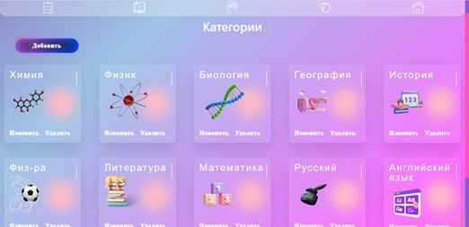

Инструкция по установке:
- Скачайте проект по кнопке "Скачать".
- Распакуйте архив WantToKnowEverythink.rar.
- Откройте папку "Тестовый комплекс".
-
Запустите CyberBrain.exe.
- Для дальнейшей работы необходимо войти в систему под одним из тестовых аккаунтов, которые прописаны на форме входа.
- Программа предлагает три варианта проверки знаний (тесты, карточки, соотношение).
- После выбора варианта проверки выбирайте категорию знаний и проходите уровни.
- Приятного тестирования!!!
Скачать